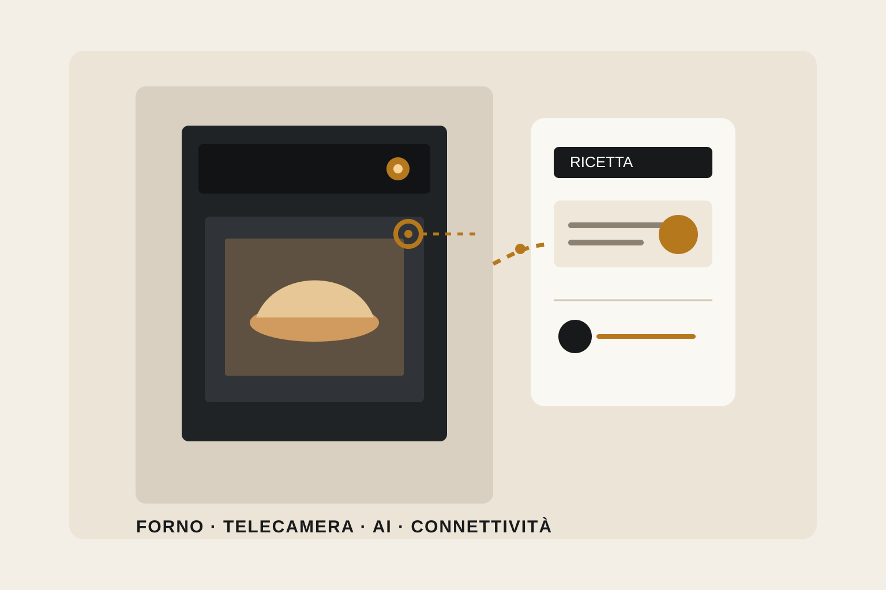

Forno con intelligenza artificiale e telecamera: cosa cambia davvero

Per anni l'evoluzione del forno da incasso si è concentrata su programmi, vapore, sonde e sistemi di pulizia. Nel 2026 entra più chiaramente in gioco un'altra possibilità: il forno non si limita a eseguire una temperatura e un tempo impostati dall'utente, ma può interpretare una ricetta digitale, riconoscere ciò che viene cucinato e ricordare alcune preferenze.
Electrolux Group ha presentato CamCook®, una funzione che combina una telecamera integrata con l'intelligenza artificiale. Il sistema è destinato ai nuovi forni AEG 9000 e lavora insieme ad AI TasteAssist: quest'ultimo analizza una ricetta trovata online e propone impostazioni compatibili con il forno, mentre CamCook riconosce il piatto e può apprendere preferenze come il livello di doratura. Il produttore ha indicato l'arrivo dei primi forni con CamCook nel corso del 2026.
La telecamera e l'intelligenza artificiale non sono la stessa funzione. AI TasteAssist può essere presente anche su modelli senza CamCook: importa e interpreta la ricetta attraverso l'app. La telecamera aggiunge invece informazioni visive su ciò che accade nella cavità.
Il cambiamento più concreto parte dalle ricette online
Una ricetta sul web normalmente indica una temperatura, un tempo e, non sempre, il tipo di ventilazione. Queste istruzioni non conoscono però il forno che verrà utilizzato, né le sue funzioni specifiche. AI TasteAssist prova a colmare proprio questo passaggio: la ricetta viene inviata attraverso l'app e il sistema suggerisce tempo, temperatura e funzione del forno.
Questo può diventare interessante nei modelli con vapore, dove la disponibilità di programmi diversi è ampia ma spesso viene sfruttata poco. Non significa che l'AI sappia automaticamente quale risultato desidera ogni persona: significa soprattutto che riduce il lavoro necessario per tradurre una ricetta generica nelle possibilità offerte dall'apparecchio.
La telecamera può fare più che mostrare l'interno
Le telecamere nei forni connessi non sono una novità assoluta: esistono già sistemi che consentono di osservare da smartphone il colore della preparazione senza aprire la porta. CamCook sposta il concetto un passo più avanti perché, secondo Electrolux Group, utilizza le immagini per riconoscere il piatto e imparare preferenze dell'utente, come la doratura, così da automatizzare impostazioni nelle preparazioni successive.
È un vantaggio diverso dal semplice controllo remoto. Nel primo caso la decisione resta all'utente che guarda l'immagine; nel secondo una parte dell'informazione visiva viene interpretata dal sistema. Per valutarne l'utilità reale sarà quindi importante distinguere le funzioni effettivamente disponibili sul modello commercializzato dalle capacità annunciate per la piattaforma.
Un forno connesso introduce anche una dipendenza digitale
Le funzioni intelligenti non vivono soltanto nell'elettrodomestico. Sui modelli AEG già disponibili con AI TasteAssist, il produttore specifica la necessità dell'app per importare le ricette; per gli aggiornamenti over-the-air servono inoltre app, account, registrazione del forno e connessione Wi-Fi. Sono condizioni semplici, ma cambiano il modo in cui va letto il prodotto.
Prima dell'acquisto conviene quindi capire quali funzioni restano disponibili direttamente dal pannello del forno, quali richiedono lo smartphone e quali dipendono dalla connessione. È una verifica particolarmente importante se il valore aggiunto che giustifica la scelta del modello è proprio nella parte software.
Dal punto di vista del mobile, l'AI non cambia le regole dell'incasso
Una funzione digitale molto evoluta non modifica le verifiche fisiche fondamentali. Il forno deve comunque essere compatibile con il vano previsto, con la ventilazione richiesta dal produttore, con la posizione della presa e con la potenza elettrica disponibile. Un modello AEG 7000 MealAssist attualmente commercializzato in Italia, per esempio, dichiara un vano di incasso da 590 × 560 × 550 mm e una potenza massima assorbita di 3500 W: sono dati del modello, non valori universali per tutti i forni intelligenti.
Restano poi le questioni ergonomiche: altezza della colonna, visibilità del display, spazio davanti alla porta aperta, rapporto con microonde o secondo forno e accessibilità delle teglie. Se il forno viene scelto soprattutto per funzioni avanzate, vale ancora di più la pena collocarlo in una posizione comoda da usare frequentemente.
La scelta ha senso quando la tecnologia incontra un'abitudine reale
Chi cucina spesso seguendo ricette online può trovare utile evitare di reinterpretare ogni volta programmi, temperature e vapore. Chi prepara ripetutamente gli stessi piatti potrebbe invece apprezzare maggiormente un sistema capace di ricordare preferenze di cottura. Per un utilizzo essenziale del forno, queste funzioni possono avere un peso molto minore rispetto a capacità, pulizia, qualità della cottura tradizionale e semplicità dei comandi.
Il punto non è quindi stabilire se un forno con AI sia in assoluto migliore. La novità diventa interessante quando riduce davvero un passaggio che l'utente compie spesso. Se invece app, telecamera e automazioni restano inutilizzate, il loro valore progettuale e pratico si riduce rapidamente.
Fonti verificate
Electrolux Group — CamCook e AI TasteAssist, 5 febbraio 2026: https://www.electroluxgroup.com/en/meet-camcook-and-ai-tasteassist-for-smarter-and-more-sustainable-cooking-45815/
Electrolux Group — AEG 9000, TasteAssist e CamCook: https://www.electroluxgroup.com/en/lifetime-value-creation-46110/
AEG Italia — esempio di forno con AI TasteAssist e specifiche di incasso: https://www.aeg.it/kitchen/cooking/ovens/oven/nbe7p731at/
AEG Support — utilizzo della telecamera CookView: https://support.aeg.it/support-articles/article/come-utilizzare-la-telecamera-del-forno